Three taps from messy to sorted
No folders to dig through and no screenshots to scroll past.
Share a link
Send anything to Pickle from Instagram, Safari, a maps app or your clipboard. It saves instantly and pulls in the title and cover.
Sort it
Swipe up to file it into a collection like Recipes or Places. Fill in a few details, or skip them for later.
Find it again
Search everything, or filter a collection by cuisine, time, deadline, price and more.
An inbox you can clear
New saves wait in your inbox as big, swipeable cards. Work through them like a stack and finish at inbox zero.
- Swipe up to sort, left to delete, right to remind
- Already saved? Pickle tells you instead of duplicating

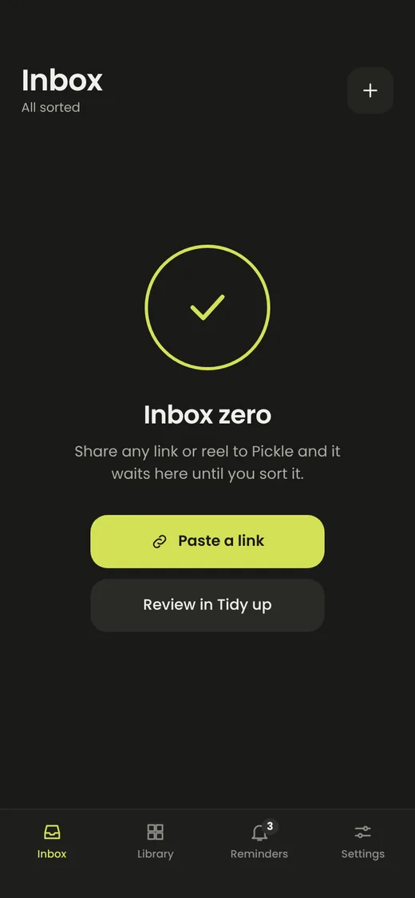
Collections that know what they hold
- 13 ready-made collections, or build your own
- Rename, recolor and reorder statuses to fit how you work
- Custom fields for anything the defaults miss


Details (customizable) that make sense!
- Ingredient checklists with scalable servings
- Sets and reps for workouts
- Extra links on any card, with a one-tap primary action


Search and filter, whatever you like
Search across titles, captions and saved article text. Then narrow down with filters that change per collection: Italian, under 30 minutes, vegetarian.

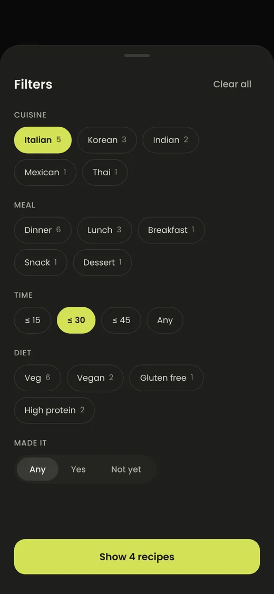
Reminders and tasks, attached to cards
- Prefilled from deadlines like hackathons and scholarships
- Today, upcoming, anytime and done in one list
- Reminders sync to your laptop too
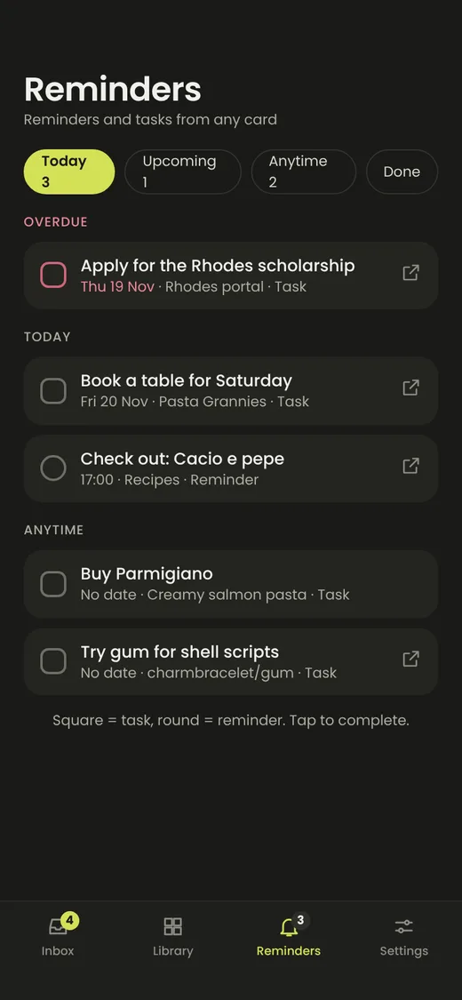
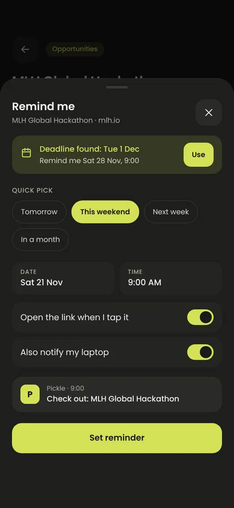
On your laptop, too
A keyboard-first layout for triage. Sort with the arrow keys, open a link with o, edit a title with e, and open several saved links at once.

One card for each kind of thing
Every card has the same shape, so your library feels calm. What changes is what each one shows and what its main action does.


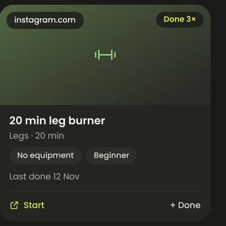
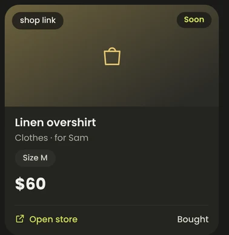

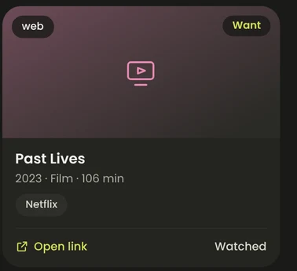
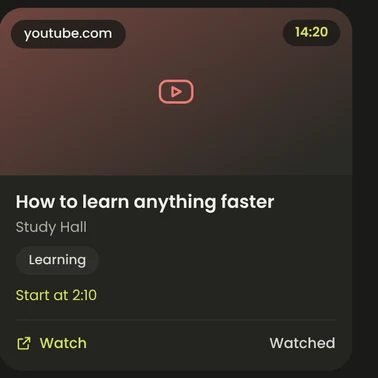


A closer look
Sharing, collection picking, sync and backup.
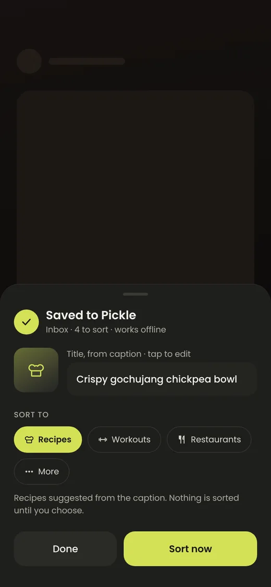

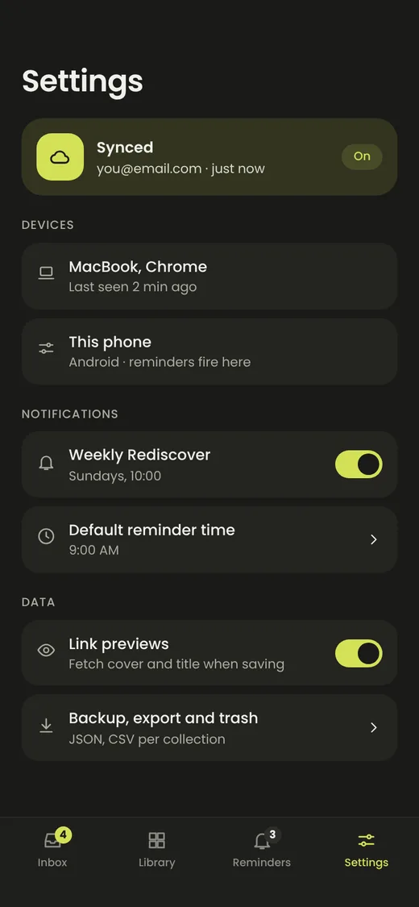
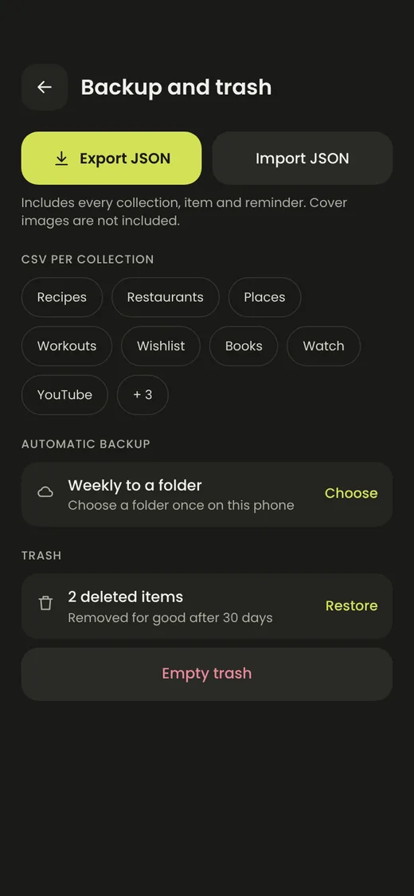

Open source, built in the open
Pickle is free and the code is on GitHub. Here is how you can help it grow.

Make doomscrolling worth it.
Pickle is in development. Star the repo to follow along and get release updates.